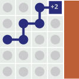
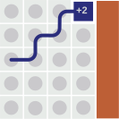
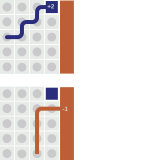
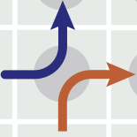

<d-cite key="Tsividis2017HumanAtari"></d-cite>
引言
过去几年中，强化学习（RL）取得了显著进展，包括击败围棋世界冠军、控制机器手，甚至绘制图像。
强化学习的一个关键子问题是价值估计——即学习处于某个状态的长期后果。 这并不容易，因为未来的回报通常充满噪声，会受到当前状态以外的许多因素影响。我们看得越远，这种情况就越明显。 尽管困难，价值估计对许多强化学习方法来说却是必不可少的。[1]
估计状态价值最自然的方式，是计算从该状态观察到的回报的平均值。我们称之为蒙特卡洛价值估计。

如果某个状态仅被一个episode访问过，蒙特卡洛会将其价值设为该episode的回报。如果多个episode访问过该状态，蒙特卡洛则将其价值估计为这些回报的平均值。
让我们用更正式的方式来描述蒙特卡洛。 在强化学习中，我们常用更新规则来描述算法，它告诉我们估计值如何随着一个新episode而变化。 我们将使用“更新朝向”（\hookleftarrow）算子来简化公式。[2]
V(s_t)~~
\hookleftarrow~~
R_t
状态价值
回报
右边的项称为回报，我们用它来衡量代理获得的长期奖励总量。回报是未来奖励的加权和r_{t} + \gamma r_{t+1} + \gamma^2 r_{t+2} + …，其中\gamma是一个折扣因子，用于控制短期奖励相对于长期奖励的重要性。朝着回报进行更新来估计价值是非常合理的。毕竟，价值的定义就是期望回报。但令人惊讶的是，我们还能做得更好。
超越蒙特卡洛
但我们可以做得更好！诀窍是使用一种称为时序差分（TD）学习的方法，它通过从相邻状态“自举”来更新价值。
V(s_t)~~
\hookleftarrow~~
r_{t}
+
\gamma V(s_{t+1})
状态价值
奖励
下一状态价值
在这种更新规则下，两条轨迹的交叉点会被不同地处理。与蒙特卡洛不同，TD更新会合并交叉点，使得回报能够反向传播到所有先前的状态。
从更正式的角度来看，“合并轨迹”是什么意思？为什么这是一个好主意？需要注意的一点是，V(s_{t+1})可以写成对其所有TD更新的期望：
V(s_{t+1})~~
\simeq~~
\mathop{\mathbb{E}} \bigr[ r’_{t+1} ~+~ \gamma V(s’_{t+2}) \bigl]
\simeq~~
\mathop{\mathbb{E}} \bigr[ r’_{t+1} \bigl] ~~+~~ \gamma \mathop{\mathbb{E}} \bigr[ V(s’_{t+2}) \bigl]
现在我们可以用这个方程来递归地展开TD更新规则：
V(s_t)~
\hookleftarrow~
r_{t}
+
\gamma V(s_{t+1})
\hookleftarrow~
r_{t}
+
\gamma \mathop{\mathbb{E}} \bigr[ r’_{t+1} \bigl]
+
\gamma^2 \mathop{\mathbb{E}} \bigr[ V(s’’_{t+2}) \bigl]
\hookleftarrow~
r_{t}
+
\gamma \mathop{\mathbb{E}} ~ \bigr[ r’_{t+1} \bigl]
+
\gamma^2 \mathop{\mathbb{EE}} ~ \bigr[ r’’_{t+2} \bigl]
+~
…~~
这就得到了一个看起来奇怪的嵌套期望值之和。乍一看，我们不清楚如何将其与更简单的蒙特卡洛更新进行比较。更重要的是，我们不清楚是否应该比较两者；这两种更新差异如此之大，以至于感觉有点像拿苹果和橙子做比较。确实，人们很容易把蒙特卡洛和TD学习看作两种完全不同的方法。
但它们其实并没有那么不同。让我们把蒙特卡洛更新改写成基于奖励的形式，并将其与展开后的TD更新并列比较。
蒙特卡洛更新
V(s_t)~
~\hookleftarrow~~
r_{t}
+~
\gamma ~ r_{t+1}
+~
\gamma^2 ~ r_{t+2}
+~
…
来自当前路径的奖励。
来自当前路径的奖励。
来自当前路径的奖励……
TD更新
V(s_t)~
~\hookleftarrow~~
r_{t}
+~
\gamma \mathop{\mathbb{E}} ~ \bigr[ r’_{t+1} \bigl]
+~
\gamma^2 \mathop{\mathbb{EE}} ~ \bigr[ r’’_{t+2} \bigl]
+~
…
来自当前路径的奖励。
来自与当前路径相交路径的期望。
来自与当前路径相交
路径相交
路径的期望……
一个令人愉悦的对应关系出现了。蒙特卡洛和TD学习之间的差异归结于那些嵌套的期望算子。事实证明，它们的作用有一个很好的视觉解释。我们称之为价值学习的路径视角。
路径视角
我们常常把代理的经验看作一系列轨迹。这种分组方式符合逻辑且易于可视化。

但这种组织经验的方式弱化了轨迹之间的关系。无论两条轨迹在哪里相交，两种结果对代理来说都是有效的未来。因此，即使代理沿着轨迹1到达了交叉点，理论上它也可以从那里开始沿着轨迹2继续。我们可以通过这些模拟轨迹或“路径”大幅扩展代理的经验。
估计价值。事实证明，蒙特卡洛是对真实轨迹进行平均，而TD学习则是对所有可能的路径进行平均。我们之前看到的嵌套期望值对应于代理在所有可能的未来路径上进行平均。

比较两者。一般来说，最好的价值估计是方差最低的那一个。由于表格型TD和蒙特卡洛都是经验平均值，能给出更好估计的方法就是平均更多样本的那一个。这就引出了一个自然的问题：哪种估计器平均的样本更多？
Var[V(s)]~~
\propto~~
\frac{1}{N}
估计的方差
平均样本数的倒数
首先，TD学习平均的轨迹数量绝不会少于蒙特卡洛，因为模拟轨迹的数量不会少于真实轨迹的数量。另一方面，当存在更多模拟轨迹时，TD学习有机会平均更多代理的经验。 这一推理表明TD学习是更好的估计器，也解释了为什么TD在表格环境中往往优于蒙特卡洛。
<p> 这是我最近一次<a href="https://www.overleaf.com/read/nppjvtjfmqjr">证明尝试</a>的链接。 </p>
引入Q函数
除了价值函数，另一种选择是Q函数。它不是估计一个状态的价值，而是估计一个状态-动作对的价值。使用Q函数最明显的原因是，它允许我们比较不同的动作。
Q函数还有其他一些很好的性质。为了看清这些性质，让我们写出蒙特卡洛和TD的更新规则。
更新Q函数。蒙特卡洛更新规则与我们之前为V(s)写的规则几乎完全相同：
Q(s_t, a_t)~~
\hookleftarrow~~
R_t
状态-动作价值
回报
我们依然是朝着回报更新。不过，这次不是朝着处于某个状态的回报更新，而是朝着处于某个状态并选择某个动作的回报更新。
现在让我们对TD更新也做同样的事情：
Q(s_t, a_t)~~
\hookleftarrow~~
r_{t}
+
\gamma Q(s_{t+1}, a_{t+1})
状态-动作价值
奖励
下一状态价值
<figcaption style="grid-row: 2; grid-column: 9/12; max-width:300px;">下一状态价值（应为 $V(s_{t+1})$）</figcaption>
这个版本的TD更新规则需要形如(s_t, a_t, r_{t}, s_{t+1}, a_{t+1})的元组，因此我们称之为Sarsa算法。 Sarsa可能是写出这个TD更新最简单的方式，但不是最高效的。 Sarsa的问题在于它对下一状态价值使用了Q(s_{t+1},a_{t+1})，而实际上它应该使用V(s_{t+1})。 我们需要的是对V(s_{t+1})的一个更好的估计。
Q(s_t, a_t)~~
\hookleftarrow~~
r_{t}
+
\gamma V(s_{t+1})
状态-动作价值
奖励
下一状态价值
V(s_{t+1})~~
=~~
?
从Q函数中恢复V(s_{t+1})的方法有很多。在下一节中，我们将仔细考察其中的四种。
用重加权路径学习Q函数
期望Sarsa。 估计下一状态价值的一个更好方法，是对其Q值进行加权求和[3]。我们称这种方法为期望Sarsa：
关于期望Sarsa有一个令人惊讶的事实：它给出的价值估计通常比直接从经验中计算的价值估计更好。这是因为期望值按照真实策略分布而非经验策略分布对Q值进行加权。通过这种方式，期望Sarsa修正了经验策略分布与真实策略分布之间的差异。
离策略价值学习。我们可以把这个想法推得更远。不是按照真实策略分布对Q值加权，而是可以按照任意策略\pi^{off}进行加权：
这个小小的修改让我们能够按照任意我们喜欢的策略来估计价值。有趣的是，可以把期望Sarsa看作离策略学习的一个特例，它被用于在策略估计。
对路径交叉进行重加权。路径视角对离策略学习有什么看法？为了回答这个问题，让我们考虑某个有多个经验路径相交的状态。

无论在哪里对相交路径进行重加权，最能代表离策略分布的路径最终会对价值估计做出更大的贡献。同时，概率低的路径贡献较小。
Q学习。在许多情况下，代理需要在次优策略下收集经验（例如为了提升探索），同时却要按照最优策略估计价值。在这些情况下，我们使用一种称为Q学习的离策略学习变体。
Q学习会剪除除最高价值路径之外的所有路径。剩下的路径是代理在测试时会跟随的路径；它们是唯一需要关注的路径。这种价值学习方式通常比在策略方法收敛得更快[4]。
双Q学习。Q学习的问题在于它给出的价值估计是有偏的。更具体地说，在存在噪声奖励时它会过于乐观。下面是一个Q学习失败的例子：
你去赌场玩了一百台老虎机。今天是你的幸运日：你在43号机器上中了头奖。现在，如果你用Q学习来估计在赌场的价值，你会选择所有玩老虎机动作中最好的结果。你最终会认为赌场的价值就是头奖的价值……并得出结论：赌场是个好地方！
有时候一个状态的最大Q值只是偶然变大；把它选出来会导致价值估计产生偏差。 减少这种偏差的一种方法是让朋友也去赌场玩同样的老虎机。然后问他在43号机器上赢了多少钱，并用他的回答作为你的价值估计。你们两人同时在同一台机器上中头奖的可能性很低，所以这次你不会得到过于乐观的估计。我们称这种方法为双Q学习。[[VanHasselt2010DoubleQ-learning]]
整合到一起。我们很容易把Sarsa、期望Sarsa、Q学习和双Q学习看作不同的算法。但正如我们所见，它们只是TD更新中估计V(s_{t+1})的不同方式而已。
所有这些方法背后的直觉是，它们都在对路径交叉进行重加权。
用蒙特卡洛对路径进行重加权。此时，一个自然的问题是：我们能否用蒙特卡洛实现同样的重加权效果？可以，但会更繁琐，而且需要对代理的所有经验进行重加权。通过在交叉点上工作，TD学习是对单个转移而不是整个episode进行重加权。这使得TD方法在离策略学习中要方便得多。
用函数逼近器合并路径
到目前为止，我们为每个状态或每个状态-动作对都学习了一个参数——即价值估计。这在Cliff World示例中效果很好，因为它的状态数量很少。但大多数有趣的强化学习问题都有大量或无限多的状态。这使得为每个状态单独存储价值估计变得困难。
因此，我们必须强制价值估计器的参数数量少于状态数量。我们可以使用线性回归、决策树或神经网络等机器学习方法来实现这一点。这些方法都属于函数逼近的范畴。
<p> 函数逼近的一个有趣特性是，更新一个参数往往会改变不止一个价值估计。让我们回到Cliff World示例来看看这会如何改变情况。这一次，我们会给环境增加很多状态。 </p>
合并相邻路径。从路径视角来看，我们可以把函数逼近解释为合并相邻路径的一种方式。但“相邻”是什么意思呢？在上面的图中，我们隐含地决定用欧几里得距离来衡量“相邻”。这是一个好主意，因为两个状态之间的欧几里得距离与代理在它们之间转移的概率高度相关。
然而，我们很容易想象这种隐含假设失效的情况。通过添加一条长障碍物，我们可以构造一个案例，其中欧几里得距离度量会导致糟糕的泛化。问题在于我们合并了错误的路径。
合并错误的路径。下图更明确地展示了合并错误路径的影响。由于欧几里得平均器是导致泛化差的罪魁祸首，蒙特卡洛和TD都会产生糟糕的价值更新。然而，TD学习会显著放大这些误差，而蒙特卡洛则不会。

我们已经看到TD学习能进行更高效的价值更新。但代价是这些更新对错误的泛化要敏感得多。
对深度强化学习的启示
神经网络。深度神经网络或许是强化学习中最受欢迎的函数逼近器。这些模型令人兴奋的原因有很多，但一个特别好的特性是它们不会对哪些状态“相邻”做出隐含假设。
在训练初期，神经网络和平均器一样，往往会合并错误的经验路径。在Cliff Walking示例中，一个未经训练的神经网络可能会做出与欧几里得平均器相同的糟糕价值更新。
但随着训练的进行，神经网络实际上能够学会克服这些误差。它们从经验中学习哪些状态是“相邻”的。在Cliff World示例中，我们可以预期一个训练充分的神经网络会学会：障碍物上方状态的价值更新永远不应该影响下方状态的价值。这是大多数其他函数逼近器做不到的。这也是深度强化学习如此有趣的原因之一！
用TD还是不用TD？到目前为止，我们已经看到了TD学习如何通过在路径相交处合并经验路径来超越蒙特卡洛。我们也看到合并路径是一把双刃剑：当函数逼近导致糟糕的价值更新时，TD可能会表现得更差。
在过去几十年中，强化学习领域的大多数工作都更偏好TD学习而不是蒙特卡洛。确实，许多强化学习方法都使用TD风格的价值更新。尽管如此，还有许多其他方式可以将蒙特卡洛用于强化学习。本文主要讨论蒙特卡洛在价值估计中的应用，但它也可以像Silver等人[[silver2017mastering]]的工作那样用于策略选择。
既然蒙特卡洛和TD学习都有各自的优点，为什么不尝试构建一个两者的混合价值估计器呢？这就是TD(\lambda)学习的出发点。它是一种简单地在蒙特卡洛和TD更新之间进行插值（使用系数\lambda）的技术[5]。通常情况下，TD(\lambda)的效果比单独使用蒙特卡洛或TD学习都要好[6]。
结论
在本文中，我们介绍了一种思考TD学习的新方式。它帮助我们理解为什么TD学习可能有益、为什么它适合离策略学习，以及为什么将其与函数逼近器结合时会面临挑战。
我们鼓励你使用下面的 playground 来加深这些直觉，或者尝试你自己的实验。